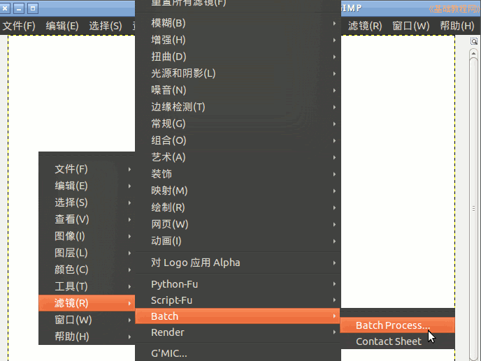
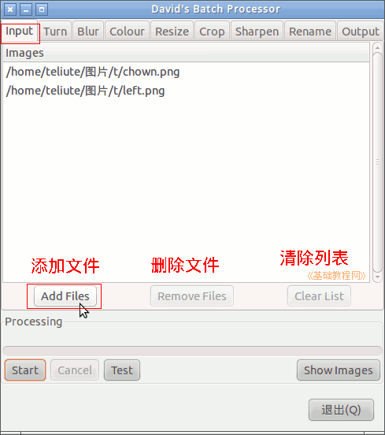
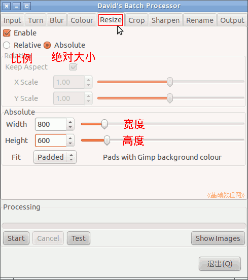
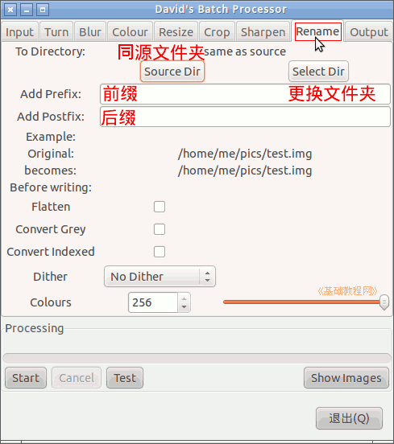
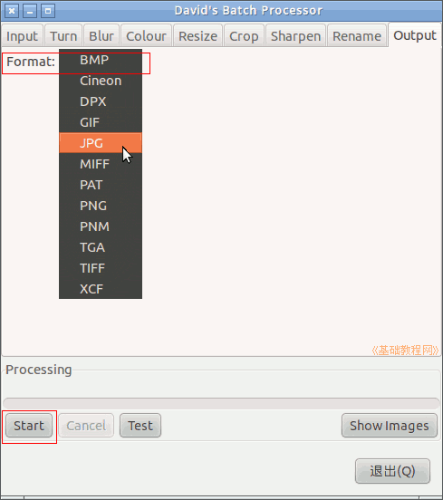

GIMP操作基础教程
作者：Teliute 来源：基础教程网
1、批处理命令
1）打开软件中心或新立得，搜索安装 gimp-plugin-registry
2）点菜单“滤镜－Batch－Batch Process”打开批处理面板；

3）在出来的窗口中，第一个Input标签中点击“Add Files..”，可以在对话框中按 Ctrl 或 Shift 键添加多个文件；

4）再点上边的 Resize 更改大小标签，打勾第一个 Enable(启用)，选择下边的 Absolute(绝对大小)，在下边设置处理后相片的宽度和高度；

5）点后面的 Rename 标签，点击“Select Dir”按钮，选择保存处理后图片的存放位置，下边还可以改文件名；

6）点最后的“Output”输出格式标签，可以转换图片文件格式，选择JPG或PNG；

7）全部设置好以后，点左下角的“Start”开始按钮即可；
本节学习了GIMP中批处理命令的基本方法，如果你成功地完成了练习，请继续学习；
本教程由86团学校TeliuTe制作|著作权所有
基础教程网：http://teliute.org/
美丽的校园……
转载和引用本站内容，请保留版权信息和本站链接。
|
|